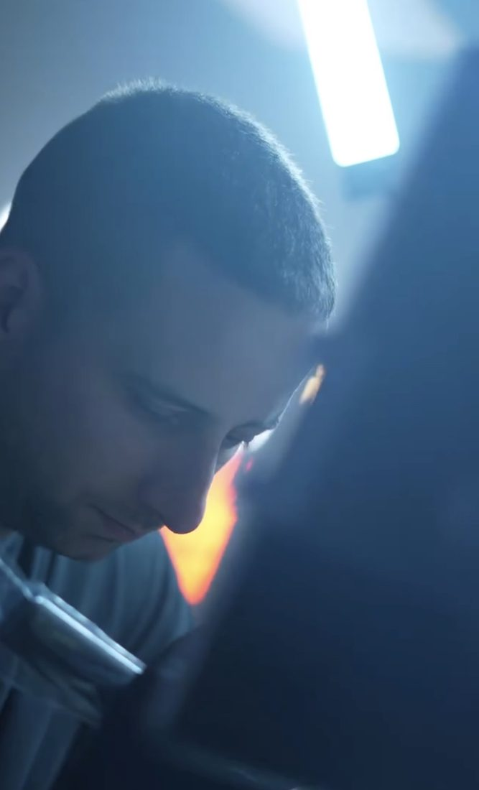

Lukáš Šenkár
Realistika / Black & Grey / Mikrorealistika / Farebné tetovania
Tetovaniu sa venujem viac ako 5 rokov a najviac ma baví realistika vo všetkých jej podobách, od výrazného black & grey cez dotwork a mikrorealistiku až po farebné tetovania. V mojej tvorbe nájdeš portréty, zvieracie motívy aj väčšie prepracované kompozície. Dôležitý je pre mňa detail, kontrast a výsledok, ktorý zaujme na prvý pohľad a vydrží fresh celé roky.